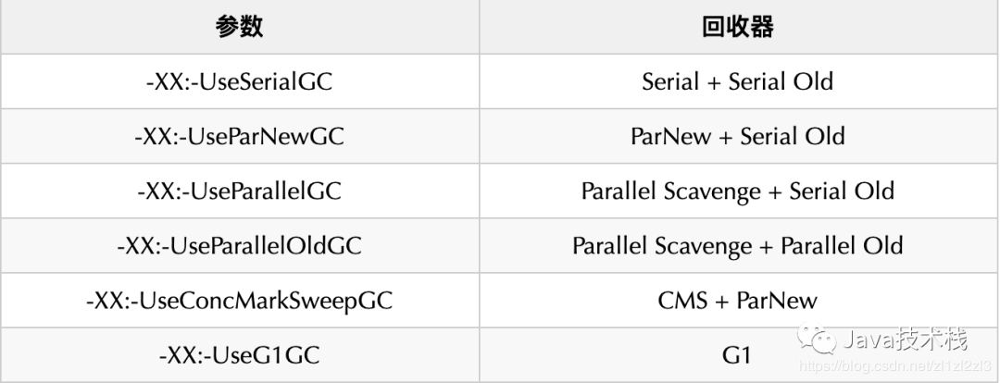
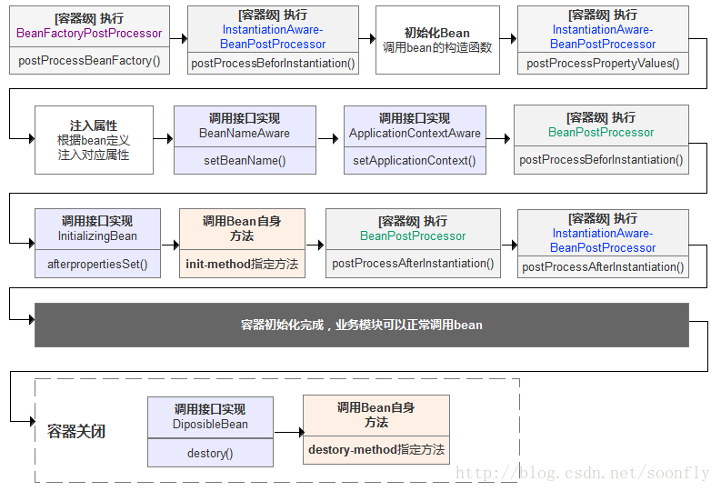
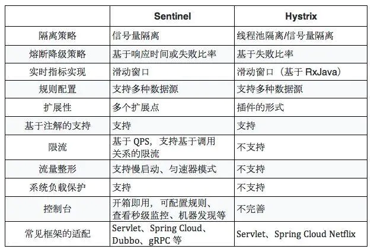

两窗两桶
- 固定窗口
- 请求速度抖动，要吗提前计满，要吗一直低于阀值不能充分利用资源
- 临界值问题
- 滑动窗口
- 解决了临界值问题，是本质上还是预先划定时间片的方式，属于一种“预测”，意味着几乎肯定无法做到100%的物尽其用。
- 漏桶
- 通过一个缓冲区将不平滑的流量“整形”成平滑的（高于均值的流量暂存下来补足到低于均值的时期），以此最大化计算处理资源的利用率。
- 令牌桶
1
2
3
4
5
6
7
8漏桶和令牌桶
两者主要区别在于“漏桶算法”能够强行限制数据的传输速率，而“令牌桶算法”在能够限制数据的平均传输速率外，还允许某种程度的突发传输。在
并不能说明令牌桶一定比漏洞好，她们使用场景不一样。令牌桶可以用来保护自己，
主要用来对调用者频率进行限流，为的是让自己不被打垮。所以如果自己本身有处理能力的时候，
如果流量突发（实际消费能力强于配置的流量限制），那么实际处理速率可以超过配置的限制。
而漏桶算法，这是用来保护他人，也就是保护他所调用的系统。
主要场景是，当调用的第三方系统本身没有保护机制，或者有流量限制的时候，我们的调用速度不能超过他的限制，由于我们不能更改第三方系统，所以只有在主调方控制。这个时候，即使流量突发，也必须舍弃。因为消费能力是第三方决定的。
总结起来：如果要让自己的系统不被打垮，用令牌桶。如果保证被别人的系统不被打垮，用漏桶算法。
四种策略该如何选择？
- 首先，固定窗口。一般来说，如非时间紧迫，不建议选择这个方案，太过生硬。但是，为了能快速止损眼前的问题可以作为临时应急的方案。
- 其次，滑动窗口。这个方案适用于对异常结果「高容忍」的场景，毕竟相比“两窗”少了一个缓冲区。但是，胜在实现简单。
- 然后，漏桶。个人觉得这个方案最适合作为一个通用方案。虽说资源的利用率上不是极致，但是「宽进严出」的思路在保护系统的同时还留有一些余地，使得它的适用场景更广。
- 最后，令牌桶。当你需要尽可能的压榨程序的性能（此时桶的最大容量必然会大于等于程序的最大并发能力），并且所处的场景流量进入波动不是很大（不至于一瞬间取完令牌，压垮后端系统）。
怎么保证缓存和数据库数据的一致性？
- 合理设置缓存的过期时间。
- 新增、更改、删除数据库操作时同步更新 Redis，可以使用事物机制来保证数据的一致性。
- 这篇讲的很好https://stor.51cto.com/art/201909/602413.htm
2pc和3pc
- 2pc
- 准备阶段(投票阶段)和第二阶段：提交阶段（执行阶段）。
- 准备阶段：事务协调者(事务管理器)给每个参与者(资源管理器)发送Prepare消息，每个参与者要么直接返回失败(如权限验证失败)，要么在本地执行事务，写本地的redo和undo日志，但不提交，到达一种“万事俱备，只欠东风”的状态。
- 提交阶段：如果协调者收到了参与者的失败消息或者超时，直接给每个参与者发送回滚(Rollback)消息；否则，发送提交(Commit)消息；参与者根据协调者的指令执行提交或者回滚操作，释放所有事务处理过程中使用的锁资源。(注意:必须在最后阶段释放锁资源)
- 问题
- 同步阻塞问题。执行过程中，所有参与节点都是事务阻塞型的。当参与者占有公共资源时，其他第三方节点访问公共资源不得不处于阻塞状态。
- 单点故障。由于协调者的重要性，一旦协调者发生故障。参与者会一直阻塞下去。尤其在第二阶段，协调者发生故障，那么所有的参与者还都处于锁定事务资源的状态中，而无法继续完成事务操作。（如果是协调者挂掉，可以重新选举一个协调者，但是无法解决因为协调者宕机导致的参与者处于阻塞状态的问题）
- 数据不一致。在二阶段提交的阶段二中，当协调者向参与者发送commit请求之后，发生了局部网络异常或者在发送commit请求过程中协调者发生了故障，这回导致只有一部分参与者接受到了commit请求。而在这部分参与者接到commit请求之后就会执行commit操作。但是其他部分未接到commit请求的机器则无法执行事务提交。于是整个分布式系统便出现了数据部一致性的现象。
- 二阶段无法解决的问题：协调者再发出commit消息之后宕机，而唯一接收到这条消息的参与者同时也宕机了。那么即使协调者通过选举协议产生了新的协调者，这条事务的状态也是不确定的，没人知道事务是否被已经提交。
- 准备阶段(投票阶段)和第二阶段：提交阶段（执行阶段）。
- 3pc
- CanCommit、PreCommit、DoCommit
- 区别
相对于2PC，3PC主要解决的单点故障问题，并减少阻塞，
因为一旦参与者无法及时收到来自协调者的信息之后，他会默认执行commit。而不会一直持有事务资源并处于阻塞状态。
但是这种机制也会导致数据一致性问题，因为，由于网络原因，协调者发送的abort响应没有及时被参与者接收到，那么参与者在等待超时之后执行了commit操作。
这样就和其他接到abort命令并执行回滚的参与者之间存在数据不一致的情况。 - 世上只有一种一致性算法，那就是Paxos，所有其他一致性算法都是Paxos算法的不完整版
分布式锁
- 基于数据库实现分布式锁；(唯一性约束)
- 基于缓存（Redis等）实现分布式锁；
redis
1
2
3
4
5
6
7
8
9
10
11
12
13
14
15
16
17
18
19
20
21
22
23
24
25
26
27
28
29
30
31
32
33
34
35
36
37
38
39
40
41
42
43
44
45
46
47public boolean lock(String randomId) {
Jedis jedis = jedisPool.getResource();
jedis.auth("root");
Long start = System.currentTimeMillis();
try {
for (; ; ) {
//SET命令返回OK ，则证明获取锁成功
String res = jedis.set(lock_key, randomId, params);
if ("OK".equals(res)) {
return true;
}
//否则循环等待，在timeout时间内仍未获取到锁，则获取失败
long l = System.currentTimeMillis() - start;
if (l >= timeout) {
return false;
}
try {
Thread.sleep(100);
} catch (InterruptedException e) {
e.printStackTrace();
}
}
} finally {
jedis.close();
}
}
public boolean unlock(String randomId) {
Jedis jedis = jedisPool.getResource();
jedis.auth("root");
String script =
"if redis.call('get',KEYS[1]) == ARGV[1] then" +
" return redis.call('del',KEYS[1]) " +
"else" +
" return 0 " +
"end";
try {
Object result = jedis.eval(script, Collections.singletonList(lock_key),
Collections.singletonList(randomId));
if ("1".equals(result.toString())) {
return true;
}
return false;
} finally {
jedis.close();
}
}redission
1
2
3
4
5
6
7
8
9
10
11
12
13
14
15
16
17
18
19
20
21
22
23/**
* RedissonClient,单机模式
*/
@Bean(destroyMethod = "shutdown")
public RedissonClient redisson() {
Config config = new Config();
SingleServerConfig singleServerConfig = config.useSingleServer();
singleServerConfig.setAddress("redis://" + host + ":" + port);
singleServerConfig.setTimeout(timeout);
singleServerConfig.setDatabase(database);
if (password != null && !"".equals(password)) { //有密码
singleServerConfig.setPassword(password);
}
return Redisson.create(config);
}
@Bean
public RedissonLocker redissonLocker(RedissonClient redissonClient) {
RedissonLocker locker = new RedissonLocker(redissonClient);
//设置LockUtil的锁处理对象
LockUtil.setLocker(locker);
return locker;
} - 基于Zookeeper实现分布式锁；
zk
1
2
3
4
5
6
7
8
9
10
11
12
13
14
15
16
17
18
19
20
21
22
23
24
25
26
27
28
29
30
31
32
33
34
35
36
37
38
39
40
41
42
43
44
45
46
47
48
49
50
51
52
53
54
55
56
57
58
59
60
61
62
63
64
65
66
67
68
69
70
71
72
73
74
75
76
77public class ZkDistributedLock extends AbstractLock {
private static final String CONNECTION = "127.0.0.1:2181";
private static final int TIMEOUT = 5000;
private ZkClient zkClient = new ZkClient(CONNECTION, TIMEOUT);
private static final String LOCK_PATH = "/lock_money";
private static final String REAL_PATH = LOCK_PATH + "/";
private String currentPath;
private String beforePath;
private CountDownLatch countDownLatch = null;
@Override
public void unLock() {
if (zkClient != null) {
//关闭连接会删除所有临时节点
zkClient.close();
}
}
@Override
boolean tryLock() {
if (!zkClient.exists(LOCK_PATH)) {
zkClient.createPersistent(LOCK_PATH);
}
if (StringUtils.isEmpty(currentPath)) {
//创建分布式锁【临时顺序节点】
currentPath = zkClient.createEphemeralSequential(REAL_PATH, "data");
//获取所有子节点
List<String> children = zkClient.getChildren(LOCK_PATH);
Collections.sort(children);
if (currentPath.equals(REAL_PATH + children.get(0))) {
//如果是第一个节点则获取锁，否则进行监听上一个节点
return true;
} else {
int i = Collections.binarySearch(children, currentPath.substring(REAL_PATH.length()));
//获取当前节点的上一个节点
beforePath = REAL_PATH + children.get(i - 1);
}
}
return false;
}
@Override
void waitLock() {
IZkDataListener listener = new IZkDataListener() {
// zk事件监听节点修改
@Override
public void handleDataChange(String s, Object o) throws Exception {
}
//zk事件监听节点删除
@Override
public void handleDataDeleted(String s) throws Exception {
System.out.println("--------------节点删除" + s);
if (countDownLatch != null) {
// 计数器为0的情况，await 后面的继续执行,释放阻塞线程
countDownLatch.countDown();
}
}
};
// 监听上一个节点是否被删除，是就释放阻塞线程【轮到自己了】-》handleDataDeleted
// 只有上一个节点被删除当前节点才会继续执行
zkClient.subscribeDataChanges(beforePath, listener);
if (zkClient.exists(beforePath)) {
countDownLatch = new CountDownLatch(1);
try {
//阻塞其他线程，下面的代码不执行
countDownLatch.wait();
} catch (Exception e) {
// TODO
}
}
//此代码只要等beforePath节点删除后才会执行，既然删除了就没必要监听了
zkClient.unsubscribeDataChanges(beforePath, listener);
}
}Curator
1 | //默认重试策略 |
redis防止内存不足 Redis定义了几种策略用来处理这种情况：
- noeviction(默认策略)：对于写请求不再提供服务，直接返回错误（DEL请求和部分特殊请求除外）
- allkeys-lru：从所有key中使用LRU算法进行淘汰
- volatile-lru：从设置了过期时间的key中使用LRU算法进行淘汰
- allkeys-random：从所有key中随机淘汰数据
- volatile-random：从设置了过期时间的key中随机淘汰
- volatile-ttl：在设置了过期时间的key中，根据key的过期时间进行淘汰，越早过期的越优先被淘汰
- 当使用volatile-lru、volatile-random、volatile-ttl这三种策略时，如果没有key可以被淘汰，则和noeviction一样返回错误。
zk脑裂
- 假死：由于心跳超时（网络原因导致的）认为master死了，但其实master还存活着。
- 脑裂：由于假死会发起新的master选举，选举出一个新的master，但旧的master网络又通了，导致出现了两个master ，有的客户端连接到老的master 有的客户端链接到新的master。
- 解决：过半选举算法
redis热点key
- 方法一:凭借业务经验，进行预估哪些是热key
- 其实这个方法还是挺有可行性的。比如某商品在做秒杀，那这个商品的key就可以判断出是热key。缺点很明显，并非所有业务都能预估出哪些key是热key。
- 方法二:在客户端进行收集
- 这个方式就是在操作redis之前，加入一行代码进行数据统计。那么这个数据统计的方式有很多种，也可以是给外部的通讯系统发送一个通知信息。缺点就是对客户端代码造成入侵。
- 方法三:在Proxy层做收集
- 有些集群架构是下面这样的，Proxy可以是Twemproxy，是统一的入口。可以在Proxy层做收集上报，但是缺点很明显，并非所有的redis集群架构都有proxy。
- 方法四:用redis自带命令
- (1)monitor命令，该命令可以实时抓取出redis服务器接收到的命令，然后写代码统计出热key是啥。当然，也有现成的分析工具可以给你使用，比如redis-faina。但是该命令在高并发的条件下，有内存增暴增的隐患，还会降低redis的性能。
- (2)hotkeys参数，redis 4.0.3提供了redis-cli的热点key发现功能，执行redis-cli时加上–hotkeys选项即可。但是该参数在执行的时候，如果key比较多，执行起来比较慢。
- 方法五:自己抓包评估
- Redis客户端使用TCP协议与服务端进行交互，通信协议采用的是RESP。自己写程序监听端口，按照RESP协议规则解析数据，进行分析。缺点就是开发成本高，维护困难，有丢包可能性。
热点key解决方案
- 服务端缓存：即将热点数据缓存至服务端的内存中
- 备份热点Key：即将热点Key+随机数，随机分配至Redis其他节点中。这样访问热点key的时候就不会全部命中到一台机器上了。
fastjson为啥快
- 1、自行编写类似StringBuilder的工具类SerializeWriter。
- 把java对象序列化成json文本，是不可能使用字符串直接拼接的，因为这样性能很差。比字符串拼接更好的办法是使用java.lang.StringBuilder。StringBuilder虽然速度很好了，但还能够进一步提升性能的，fastjson中提供了一个类似StringBuilder的类com.alibaba.fastjson.serializer.SerializeWriter。
- SerializeWriter提供一些针对性的方法减少数组越界检查。例如public void writeIntAndChar(int i, char c) {}，这样的方法一次性把两个值写到buf中去，能够减少一次越界检查。目前SerializeWriter还有一些关键的方法能够减少越界检查的，我还没实现。也就是说，如果实现了，能够进一步提升serialize的性能。
- 2、使用ThreadLocal来缓存buf。
- 这个办法能够减少对象分配和gc，从而提升性能。SerializeWriter中包含了一个char[] buf，每序列化一次，都要做一次分配，使用ThreadLocal优化，能够提升性能。
- 3、使用asm避免反射
- 获取java bean的属性值，需要调用反射，fastjson引入了asm的来避免反射导致的开销。fastjson内置的asm是基于objectweb asm 3.3.1改造的，只保留必要的部分，fastjson asm部分不到1000行代码，引入了asm的同时不导致大小变大太多。
- 4、使用一个特殊的IdentityHashMap优化性能。
- fastjson对每种类型使用一种serializer，于是就存在class -> JavaBeanSerizlier的映射。fastjson使用IdentityHashMap而不是HashMap，避免equals操作。我们知道HashMap的算法的transfer操作，并发时可能导致死循环，但是ConcurrentHashMap比HashMap系列会慢，因为其使用volatile和lock。fastjson自己实现了一个特别的IdentityHashMap，去掉transfer操作的IdentityHashMap，能够在并发时工作，但是不会导致死循环。
- 5、缺省启用sort field输出
- json的object是一种key/value结构，正常的hashmap是无序的，fastjson缺省是排序输出的，这是为deserialize优化做准备。
- 6、集成jdk实现的一些优化算法
zookeeper避免羊群效应
- 获取锁时创建一个临时顺序节点，顺序最小的那个才能获取到锁，之后尝试加锁的客户端就监听自己的上一个顺序节点，当上一个顺序节点释放锁之后，自己尝试加锁，其余的客户端都对上一个临时顺序节点监听，不会一窝蜂的去尝试给同一个节点加锁导致羊群效应。
class加载过程
- 加载，查找并加载类的二进制数据，在Java堆中也创建一个java.lang.Class类的对象
- 连接，连接又包含三块内容：验证、准备、初始化。 1）验证，文件格式、元数据、字节码、符号引用验证； 2）准备，为类的静态变量分配内存，并将其初始化为默认值； 3）解析，把类中的符号引用转换为直接引用
- 初始化，为类的静态变量赋予正确的初始值
- 使用，new出对象程序中使用
- 卸载，执行垃圾回收
jvm
- 那么如何找到可回收对象
- 引用计数法（这种算法很难解决对象之间相互引用的情况）
- 可达性分析法(“GC Roots”的对象作为起始点，从这些节点向下搜索，搜索所走过的路径称为引用链，当一个对象到GC Roots没有任何引用链（即GC Roots到对象不可达）时，则证明此对象是不可用的。)
- GCRoots
- 虚拟机栈（栈帧中的局部变量区，也叫做局部变量表）中引用的对象。
- 方法区中的类静态属性引用的对象。
- 方法区中常量引用的对象。
- 本地方法栈中JNI(Native方法)引用的对象。
- 垃圾收集算法
- 标记-清除（Mark-Sweep）算法(标记清除后会产生大量不连续的内存碎片)

- 复制（Copying）算法 (内存缩小为了原来的一半，这样代价太高了)

- 标记-整理（Mark-Compact）算法(复制算法在对象存活率较高的场景下要进行大量的复制操作，效率很低)

- 分代回收算法(大批对象死去、少量对象存活的（新生代），使用复制算法，复制成本低；对象存活率高、没有额外空间进行分配担保的（老年代），采用标记-清理算法或者标记-整理算法。)

- 标记-清除（Mark-Sweep）算法(标记清除后会产生大量不连续的内存碎片)
- 分代回收堆结构
- 程序计数器（当前线程的行号指示器）
- java虚拟机栈（局部变量表 操作数栈 指向运行时常量池的引用 方法返回地址）
- 本地方法栈（主要为native方法服务）
- 堆（存储对象实例）
- JDK1.6方法区（在堆里）
- 类信息，静态变量，常量，运行时常量池存，即时编译后的代码
- JDK1.7方法区（在堆里）
- 类信息，静态变量，常量，即时编译后的代码
- Symbol的存储从PermGen移动到了native memory，并且把静态变量从instanceKlass末尾（位于PermGen内）移动到了java.lang.Class对象的末尾（位于普通Java heap内）；
- 字符串常量池移到了堆中。
- JDK1.8方法区（元空间）
- 元空间
- （符号引用(Symbols)转移到了native heap
- 运行时常量池转移到元空间
- 静态变量和字面量(interned strings)存储到了堆
- 元空间并不在虚拟机中，而是使用本地内存。
- 元空间
- 堆空间内存分配（默认情况下）
- 老年代 ： 三分之二的堆空间
- 年轻代 ： 三分之一的堆空间
- eden区： 8/10 的年轻代空间
- survivor0 : 1/10 的年轻代空间
- survivor1 : 1/10 的年轻代空间
常用的 JVM 调优的参数都有哪些？
- -Xms2g：初始化推大小为 2g；
- -Xmx2g：堆最大内存为 2g；
- -XX:NewRatio=4：设置年轻的和老年代的内存比例为 1:4；
- -XX:SurvivorRatio=8：设置新生代 Eden 和 Survivor 比例为 8:2；
- –XX:+UseParNewGC：指定使用 ParNew + Serial Old 垃圾回收器组合；
- -XX:+UseParallelOldGC：指定使用 ParNew + ParNew Old 垃圾回收器组合；
- -XX:+UseConcMarkSweepGC：指定使用 CMS + Serial Old 垃圾回收器组合；
- -XX:+PrintGC：开启打印 gc 信息；
- -XX:+PrintGCDetails：打印 gc 详细信息。
mysql主从
- 从库生成两个线程，一个I/O线程，一个SQL线程；
- i/o线程去请求主库 的binlog，并将得到的binlog日志写到relay log（中继日志） 文件中；
- 主库会生成一个 log dump 线程，用来给从库 i/o线程传binlog；
- SQL 线程，会读取relay log文件中的日志，并解析成具体操作，来实现主从的操作一致，而最终数据一致；
- mysql主从复制存在的问题：
- 主库宕机后，数据可能丢失
- 从库只有一个sql Thread，主库写压力大，复制很可能延时
- 解决方法：
- 半同步复制—解决数据丢失的问题
- 并行复制—-解决从库复制延迟的问题（set global slave_parallel_workers=10;）
mysql索引种类
- 普通索引
- 唯一索引
- 主键索引
- 联合索引
- 全文索引
mysql索引类型
btree
hash
- 检索效率高
- 需要全表扫描
- 只能用于等值查询，不能范围查询
- 无法避免排序
- 无法进行单一索引，需要组合索引（不是单独计算hash）
场景：
- hash索引仅适用于‘=’、‘<=>’和‘in’操作，所以hash仅仅适用于精确查找。
- 冲突小，数据量小
局限性
- 不能使用范围查询
- 无法被用来避免数据的排序操作
- 不能利用部分索引键查询
- 在任何时候都不能避免表扫描
- 遇到大量Hash值相等的情况后性能并不一定就会比B-Tree索引高
mysql存储引擎
- InnoDB 支持事务、行级锁,外键 (查询慢)
- MyIASM 引擎：不提供事务的支持，也不支持行级锁和外键 (查询快)
MySQL 问题排查都有哪些手段？
- 使用 show processlist 命令查看当前所有连接信息。
- 使用 explain 命令查询 SQL 语句执行计划。
- 开启慢查询日志，查看慢查询的 SQL。
如何做 MySQL 的性能优化？
- 为搜索字段创建索引。
- 避免使用 select *，列出需要查询的字段。
- 垂直分割分表。
- 选择正确的存储引擎。
linux零拷贝
- 传统io
- hard drive（DMA拷贝） ——> kernel buffer（CPU拷贝） ——> user buffer（CPU拷贝）——> socket buffer（DMA拷贝）——> protocol engine
- sendfile
- hard drive（DMA拷贝） ——> kernel buffer（CPU拷贝） ——> socket buffer（DMA拷贝） ——> protocol engine
- linux提供scatter/gather的DMA 零拷贝
- hard drive（DMA拷贝） ——> kernel buffer（只拷贝描述符信息到socket buffer）（然后根据socket描述符进行DMA拷贝）） ——> protocol engine
- 该描述符包含了两方面的信息：a)kernel buffer的内存地址；b)kernel buffer的偏移量。
select、poll、epoll区别
- select
- 每次调用select，都需要把fd集合从用户态拷贝到内核态，这个开销在fd很多时会很大
- 同时每次调用select都需要在内核遍历传递进来的所有fd，这个开销在fd很多时也很大
- select支持的文件描述符数量太小了，默认是1024
- poll
- poll的实现和select非常相似，只是描述fd集合的方式不同，poll使用pollfd结构而不是select的fd_set结构，
- epoll
- current挂一遍（这一遍必不可少）并为每个fd指定一个回调函数，当设备就绪，唤醒等待队列上的等待者时，就会调用这个回调函数，而这个回调函数会把就绪的fd加入一个就绪链表）
redis 多路复用
- IO multiplexing就是我们说的select，poll，epoll，有些地方也称这种IO方式为event driven IO。select/epoll的好处就在于单个process就可以同时处理多个网络连接的IO。它的基本原理就是select，poll，epoll这个function会不断的轮询所负责的所有socket，当某个socket有数据到达了，就通知用户进程。
redis快
- 采用了多路复用io阻塞机制
- 数据结构简单，操作节省时间
- 运行在内存中，自然速度快
redis为什么单线程
- 因为Redis的瓶颈不是cpu的运行速度，而往往是网络带宽和机器的内存大小。再说了，单线程切换开销小，容易实现既然单线程容易实现，而且CPU不会成为瓶颈，那就顺理成章地采用单线程的方案了。
redis跳跃表
- 简单的说就是一种提升了查询性能的有序链表。
- 链表好啊，插入和删除都是O(1)，但是只能O(n)查找，岂不是很难受？
- 跳表就是从链表中抽取部分节点构成一个新链表，并且指向原链表中的相应节点，这样O(n)的n不就缩小了？在上一层确定大致位置后再到下一层去找，也是一种索引。
- 跳表选上层节点依赖“掷骰子”，也就是随机判断。

redis数据结构
- String场景
- 缓存： 经典使用场景，把常用信息，字符串，图片或者视频等信息放到redis中，redis作为缓存层，mysql做持久化层，降低mysql的读写压力。
- 计数器：redis是单线程模型，一个命令执行完才会执行下一个，同时数据可以一步落地到其他的数据源。
- session：常见方案spring session + redis实现session共享，
- Hash场景
- 缓存： 能直观，相比string更节省空间，的维护缓存信息，如用户信息，视频信息等。
- List场景
- timeline：例如微博的时间轴，有人发布微博，用lpush加入时间轴，展示新的列表信息。
- Set场景
- 标签（tag）,给用户添加标签，或者用户给消息添加标签，这样有同一标签或者类似标签的可以给推荐关注的事或者关注的人。
- 点赞，或点踩，收藏等，可以放到set中实现
- 共同关注
- zset场景
- 排行榜
- Bitmaps
- 储存用户在线状态。
- Geo(存储地理位置信息)
- HyperLogLog（基数统计）
redis持久化
- rdb:可以设置间隔多长时间保存一次(redis不用任何配置默认的持久化方案)
- 优点:让redis的数据存取速度变快
- 缺点:服务器断电时会丢失部分数据(数据的完整性得不到保障)
- 配置
- save 900 1
- save 300 10
- save 60 10000
- aof:可以设置实时保存
- 优点:持久化良好,能够保障数据的完整性
- 缺点:大大降低了redis系统的存取速度
- 配置
- appendonly yes
redis配置
1 | #是否作为守护进程运行 |
redis集群
主从复制
- 主从复制原理：
- 从服务器连接主服务器，发送SYNC命令；
- 主服务器接收到SYNC命名后，开始执行BGSAVE命令生成RDB文件并使用缓冲区记录此后执行的所有写命令；
- 主服务器BGSAVE执行完后，向所有从服务器发送快照文件，并在发送期间继续记录被执行的写命令；
- 从服务器收到快照文件后丢弃所有旧数据，载入收到的快照；
- 主服务器快照发送完毕后开始向从服务器发送缓冲区中的写命令；
- 从服务器完成对快照的载入，开始接收命令请求，并执行来自主服务器缓冲区的写命令；（从服务器初始化完成）
- 主服务器每执行一个写命令就会向从服务器发送相同的写命令，从服务器接收并执行收到的写命令（从服务器初始化完成后的操作）
- 优点：
- 支持主从复制，主机会自动将数据同步到从机，可以进行读写分离
- 为了分载Master的读操作压力，Slave服务器可以为客户端提供只读操作的服务，写服务仍然必须由Master来完成
- Slave同样可以接受其它Slaves的连接和同步请求，这样可以有效的分载Master的同步压力。
- Master Server是以非阻塞的方式为Slaves提供服务。所以在Master-Slave同步期间，客户端仍然可以提交查询或修改请求。
- Slave Server同样是以非阻塞的方式完成数据同步。在同步期间，如果有客户端提交查询请求，Redis则返回同步之前的数据
- 缺点：
- Redis不具备自动容错和恢复功能，主机从机的宕机都会导致前端部分读写请求失败，需要等待机器重启或者手动切换前端的IP才能恢复。
- 主机宕机，宕机前有部分数据未能及时同步到从机，切换IP后还会引入数据不一致的问题，降低了系统的可用性。
- Redis较难支持在线扩容，在集群容量达到上限时在线扩容会变得很复杂。
哨兵模式
当主服务器中断服务后，可以将一个从服务器升级为主服务器，以便继续提供服务，但是这个过程需要人工手动来操作。 为此，Redis 2.8中提供了哨兵工具来实现自动化的系统监控和故障恢复功能。
哨兵的作用就是监控Redis系统的运行状况。它的功能包括以下两个。
（1）监控主服务器和从服务器是否正常运行。
（2）主服务器出现故障时自动将从服务器转换为主服务器。
- 哨兵的工作方式：
- 每个Sentinel（哨兵）进程以每秒钟一次的频率向整个集群中的Master主服务器，Slave从服务器以及其他Sentinel（哨兵）进程发送一个 PING 命令。
- 如果一个实例（instance）距离最后一次有效回复 PING 命令的时间超过 down-after-milliseconds 选项所指定的值， 则这个实例会被 Sentinel（哨兵）进程标记为主观下线（SDOWN）
- 如果一个Master主服务器被标记为主观下线（SDOWN），则正在监视这个Master主服务器的所有 Sentinel（哨兵）进程要以每秒一次的频率确认Master主服务器的确进入了主观下线状态
- 当有足够数量的 Sentinel（哨兵）进程（大于等于配置文件指定的值）在指定的时间范围内确认Master主服务器进入了主观下线状态（SDOWN）， 则Master主服务器会被标记为客观下线（ODOWN）
- 在一般情况下， 每个 Sentinel（哨兵）进程会以每 10 秒一次的频率向集群中的所有Master主服务器、Slave从服务器发送 INFO 命令。
- 当Master主服务器被 Sentinel（哨兵）进程标记为客观下线（ODOWN）时，Sentinel（哨兵）进程向下线的 Master主服务器的所有 Slave从服务器发送 INFO 命令的频率会从 10 秒一次改为每秒一次。
- 若没有足够数量的 Sentinel（哨兵）进程同意 Master主服务器下线， Master主服务器的客观下线状态就会被移除。若 Master主服务器重新向 Sentinel（哨兵）进程发送 PING 命令返回有效回复，Master主服务器的主观下线状态就会被移除。
- 优点：
- 哨兵模式是基于主从模式的，所有主从的优点，哨兵模式都具有。
- 主从可以自动切换，系统更健壮，可用性更高。
- 缺点：
- Redis较难支持在线扩容，在集群容量达到上限时在线扩容会变得很复杂。
Redis-Cluster集群
redis的哨兵模式基本已经可以实现高可用，读写分离 ，但是在这种模式下每台redis服务器都存储相同的数据，很浪费内存
，所以在redis3.0上加入了cluster模式，实现的redis的分布式存储，也就是说每台redis节点上存储不同的内容。
Redis-Cluster采用无中心结构,它的特点如下：
- 所有的redis节点彼此互联(PING-PONG机制),内部使用二进制协议优化传输速度和带宽。
- 节点的fail是通过集群中超过半数的节点检测失效时才生效。
- 客户端与redis节点直连,不需要中间代理层.客户端不需要连接集群所有节点,连接集群中任何一个可用节点即可。
redis缓存穿透，缓存雪崩，缓存击穿
- 缓存穿透
- 布隆过滤器
- 这个空结果进行缓存，但它的过期时间会很短，最长不超过五分钟。
- 缓存雪崩
- 在缓存失效后，通过加锁或者队列来控制读数据库写缓存的线程数量。比如对某个key只允许一个线程查询数据和写缓存，其他线程等待。
- 可以通过缓存reload机制，预先去更新缓存，在即将发生大并发访问前手动触发加载缓存。
- 不同的key，设置不同的过期时间，让缓存失效的时间点尽量均匀。
- 做二级缓存，或者双缓存策略。A1为原始缓存，A2为拷贝缓存，A1失效时，可以访问A2，A1缓存失效时间设置为短期，A2设置为长期。
- 缓存击穿
- 后台刷新
- 检查更新（）
- 分级缓存
- 加锁
hashmap和数ConcurrentHashMap据结构
- HashMap JDK1.7
- 由一个数组+链表
- 链地址法 + 头插法
- HashMap JDK1.8
- Node数组+链表+红黑树
- 链地址法 + 尾插法 + 红黑树
- 链表长度 >8 时使用红黑树
- ConcurrentHashMap JDK1.7
- [https://blog.csdn.net/ToBe_Coder/article/details/86996665]
- Segment + HashEntry
- 分段锁基于Segment
- ConcurrentHashMap JDK1.8
- Node数组+链表+红黑树
- CAS + Synchronized
- 初始化为16
- 太小了就有可能频繁发生扩容，影响效率。太大了又浪费空间，不划算。
- 获取下标 （index = HashCode（Key） & （Length - 1））
- 保证不会发生数组越界
- 保证元素尽可能的均匀分布
- 保证偶数
- 负载因子0.75
- 负载因子为1，冲突变大，查询效率底
- 负载因子为0.5，虽然时间效率提升了，但是空间利用率降低了
- 负载因子为0.75，空间利用率比较高，而且避免了相当多的Hash冲突
- 扩容×2或者/2 (hash%length==hash&(length-1))
- 为啥要用红黑树
- 链表的时间复杂度是O(n)，红黑树的时间复杂度O(logn)，红黑树的复杂度是优于链表的
- 树节点所占空间是普通节点的两倍，所以只有当节点足够多的时候，才会使用树节点。也就是说，节点少的时候，尽管时间复杂度上，红黑树比链表好一点，但是红黑树所占空间比较大，
ReentrantLock原理
高并发
- 增加机器
- 业务逻辑优化sql
- 缓存
- 限流降级
- 分表分库
- 异步化（消息队列）
IO与NIO 区别
IO NIO
面向流 面向缓冲
阻塞IO 非阻塞IO
无 选择器mysql三大范式
- 1NF:字段不可分;
- 2NF:有主键，非主键字段依赖主键;
- 3NF:非主键字段不能相互依赖;
事务事务性质：原子性、
- 原子性。即不可分割性，事务要么全部被执行，要么就全部不被执行。
- 一致性或可串性。事务的执行使得数据库从一种正确状态转换成另一种正确状态
- 隔离性。在事务正确提交之前，不允许把该事务对数据的任何改变提供给任何其他事务，
- 持久性。事务正确提交后，其结果将永久保存在数据库中，即使在事务提交后有了其他故障，事务的处理结果也会得到保存。
索引优点：
- 第一，通过创建唯一性索引，可以保证数据库表中每一行数据的唯一性。
- 第二，可以大大加快 数据的检索速度，这也是创建索引的最主要的原因。
- 第三，可以加速表和表之间的连接，特别是在实现数据的参考完整性方面特别有意义。
- 第四，在使用分组和排序 子句进行数据检索时，同样可以显著减少查询中分组和排序的时间。
- 第五，通过使用索引，可以在查询的过程中，使用优化隐藏器，提高系统的性能。
事务隔离级别
- 更新丢失（Lost update）： 两个事务都同时更新一行数据但是第二个事务却中途失败退出导致对数据两个修改都失效了这是系统没有执
行任何锁操作因此并发事务并没有被隔离开来。
- 脏读取（Dirty Reads）： 一个事务开始读取 了某行数据但是另外一个事务已经更新了此数据但没有能够及时提交。这是相当危险很可能所有操作都被回滚。
- 不可重复读取（Non-repeatable Reads）： 一 个事务对同一行数据重复读取两次但是却得到了不同结果。例如在两次读取中途有另外一个事务对该行数据进行了修改并提交。
- 两次更新问题（Second lost updates problem）： 无法重复读取特例，有两个并发事务同时读取同一行数据
然后其中一个对它进行修改提交而另一个也进行了修改提交这就会造成 第一次写操作失效。
- 两次更新问题（Second lost updates problem）： 无法重复读取特例，有两个并发事务同时读取同一行数据
- 幻读（Phantom Reads）： 也称为幻像（幻 影）。事务在操作过程中进行两次查询，第二次查询结果包含了第一次查询中未出现的数据（这里并不要求两次查询SQL语句相同）
这是因为在两次查询过程中有 另外一个事务插入数据造成的。
- 幻读（Phantom Reads）： 也称为幻像（幻 影）。事务在操作过程中进行两次查询，第二次查询结果包含了第一次查询中未出现的数据（这里并不要求两次查询SQL语句相同）
为了避免上面出现几种情况在标准SQL规范中定义了4个事务隔离级别，不同隔离级别对事务处理不同 。
未授权读取（Read Uncommitted）： (脏读)
- 事务在读数据的时候并未对数据加锁。 - 事务在修改数据的时候只对数据增加行级共享锁。授权读取（Read Committed）： 也称提交 读。（不可重复读）
- 事务对当前被读取的数据加**行级**共享锁（当读到时才加锁），一旦读完该行，立即释放该行级共享锁； - 事务在更新某数据的瞬间（就是发生更新的瞬间），必须先对其加**行级**排他锁，直到事务结束才释放。可重复读取（Repeatable Read）： （插入产生幻读）
- 事务在读取某数据的瞬间（就是开始读取的瞬间），必须先对其加**行级**共享锁，直到事务结束才释放； - 事务在更新某数据的瞬间（就是发生更新的瞬间），必须先对其加**行级**排他锁，直到事务结束才释放。串行（Serializable）： 也称可串行读。
- 事务在读取数据时，必须先对其加**表级**共享锁 ，直到事务结束才释放； - 事务在更新数据时，必须先对其加**表级**排他锁 ，直到事务结束才释放。@Transactional(propagation=Propagation.REQUIRED)
如果有事务, 那么加入事务, 没有的话新建一个(默认情况下)
@Transactional(propagation=Propagation.NOT_SUPPORTED)
容器不为这个方法开启事务
@Transactional(propagation=Propagation.REQUIRES_NEW)
不管是否存在事务,都创建一个新的事务,原来的挂起,新的执行完毕,继续执行老的事务
@Transactional(propagation=Propagation.MANDATORY)
必须在一个已有的事务中执行,否则抛出异常
@Transactional(propagation=Propagation.NEVER)
必须在一个没有的事务中执行,否则抛出异常(与Propagation.MANDATORY相反)
@Transactional(propagation=Propagation.SUPPORTS)
如果其他bean调用这个方法,在其他bean中声明事务,那就用事务.如果其他bean没有声明事务,那就不用事务.事物超时设置:
@Transactional(timeout=30) //默认是30秒
事务隔离级别:
- @Transactional(isolation = Isolation.READ_UNCOMMITTED)
- 读取未提交数据(会出现脏读, 不可重复读) 基本不使用
- @Transactional(isolation = Isolation.READ_COMMITTED)
- 读取已提交数据(会出现不可重复读和幻读)
- @Transactional(isolation = Isolation.REPEATABLE_READ)
- 可重复读(会出现幻读)
- @Transactional(isolation = Isolation.SERIALIZABLE)
- 串行化
TCP可靠性
- 面向连接的传输（准备好了传）
- 最大报文段长度（一共传多少）
- 传输确认机制（TCP发送的每一个数据都要进行确认，丢没丢）
- 首部和数据的校验和（错没错）
- 重传输（若没有收到ACK,则在等一定时间后重新发送数据）
- 重排序（对分片用序列号进行重新排序）
- 流量控制（量力而行，按需传递）
tcp协议和udp协议的差别
TCP UDP 是否连接 面向连接 面向非连接
传输可靠性 可靠 不可靠
应用场合 少量数据 传输大量数据
速度 慢 快
CAS
- CAS算法是乐观锁的一种实现。CAS有3个操作数，内存值V，旧的预期值A，要修改的新值B。当且仅当旧预期值A和内存值V相同时，将内存值V修改为B并返回true，否则返回false。
CAS ABA问题
- 一个小偷，把别人家的钱偷了之后又还了回来，还是原来的钱吗，你老婆出轨之后又回来，还是原来的老婆吗？ABA问题也一样，如果不好好解决就会带来大量的问题。最常见的就是资金问题，也就是别人如果挪用了你的钱，在你发现之前又还了回来。但是别人却已经触犯了法律。
- 解决方式：维护一个版本号 例如：AtomicStampedReference
mq特点
- 解耦
- 异步
- 流量削峰
mq防止重复消费
- 数据库唯一性
- redis set，天然的幂等性。
rabbitmq概念
- Broker：简单来说就是消息队列服务器实体。
- Exchange：消息交换机，它指定消息按什么规则，路由到哪个队列。
- Queue：消息队列载体，每个消息都会被投入到一个或多个队列。
- Binding：绑定，它的作用就是把exchange和queue按照路由规则绑定起来。
- Routing Key：路由关键字，exchange根据这个关键字进行消息投递。
- vhost：虚拟主机，一个broker里可以开设多个vhost，用作不同用户的权限分离。
- producer：消息生产者，就是投递消息的程序。
- consumer：消息消费者，就是接受消息的程序。
- channel：消息通道，在客户端的每个连接里，可建立多个channel，每个channel代表一个会话任务
rabbitmq消息可靠性
- 生产者丢失消息：从生产者弄丢数据这个角度来看，RabbitMQ提供transaction和confirm模式来确保生产者不丢消息；
transaction机制就是说：发送消息前，开启事务（channel.txSelect()）,然后发送消息，如果发送过程中出现什么异常，事务就会回滚（channel.txRollback()）,
confirm模式用的居多：一旦channel进入confirm模式，所有在该信道上发布的消息都将会被指派一个唯一的ID（从1开始），一旦消息被投递到所有匹配的队列之后；
rabbitMQ就会发送一个ACK给生产者（包含消息的唯一ID），这就使得生产者知道消息已经正确到达目的队列了；
如果rabbitMQ没能处理该消息，则会发送一个Nack消息给你，你可以进行重试操作。 - 消息队列丢数据：消息持久化。
处理消息队列丢数据的情况，一般是开启持久化磁盘的配置。
这个持久化配置可以和confirm机制配合使用，你可以在消息持久化磁盘后，再给生产者发送一个Ack信号。
这样，如果消息持久化磁盘之前，rabbitMQ阵亡了，那么生产者收不到Ack信号，生产者会自动重发。
那么如何持久化呢？
这里顺便说一下吧，其实也很容易，就下面两步
将queue的持久化标识durable设置为true,则代表是一个持久的队列
发送消息的时候将deliveryMode=2
这样设置以后，即使rabbitMQ挂了，重启后也能恢复数据 - 消费者丢失消息：消费者丢数据一般是因为采用了自动确认消息模式，改为手动确认消息即可！
消费者在收到消息之后，处理消息之前，会自动回复RabbitMQ已收到消息；
如果这时处理消息失败，就会丢失该消息；
解决方案：处理消息成功后，手动回复确认消息。
rabbitmq顺序消费
- 拆分为多个queue，每个queue由一个consumer消费；
- 就一个queue但是对应一个consumer，然后这个consumer内部用内存队列做排队，然后分发给底层不同的worker来处理
springcloud rabbitmq
1 | spring: |
rabbitmq交换器类型
- Direct交换器
处理路由键。需要将一个队列绑定到交换机上，要求该消息与一个特定的路由键完全匹配。这是一个完整的匹配。如果一个队列绑定到该交换机上要求路由键 “test”，则只有被标记为“test”的消息才被转发，不会转发test.aaa，也不会转发dog.123，只会转发test。
- Topic交换器
将路由键和某模式进行匹配。此时队列需要绑定要一个模式上。符号“#”匹配一个或多个词，符号“”匹配不多不少一个词。因此“audit.#”能够匹配到“audit.irs.corporate”，但是“audit.” 只会匹配到“audit.irs”。
- Fanout交换器
不处理路由键。你只需要简单的将队列绑定到交换机上。一个发送到交换机的消息都会被转发到与该交换机绑定的所有队列上。很像子网广播，每台子网内的主机都获得了一份复制的消息。Fanout交换机转发消息是最快的。
- Headers交换器
它是根据Message的一些头部信息来分发过滤Message，忽略routing key的属性，如果Header信息和message消息的头信息相匹配，那么这条消息就匹配上了
下面两篇写的非常详细：
SpringCloud之RabbitMQ消息队列原理及配置
【RabbitMQ】三种类型交换器 Fanout,Direct,Topic
Kafka读写硬盘为什么速度还那么快
- 顺序写磁盘
- 大量使用内存页
- 零拷贝技术的使用
什么是微服务？
- 微服务是一种架构模式或是一种架构风格，它提倡的是将单一的应用程序划分成若干个小的服务，每个服务都有独立的进程，服务之间相互协调，相互配合，最终完成目的。
- 服务之间采用轻量级的通信机制，通常是基于HTTP的TESTful API。
- 每个服务都围绕着具体业务进行构建，并且能够被独立地部署到生产环境、类生产环境等
- 应尽量避免统一的、集中式的服务管理机制，对具体的一个服务而言，应根据业务上下文，选择合适的语言、工具对其进行构建，可以有一个非常轻量级的集中式管理来协调这些服务，可以使用不同的语言来编写服务，也可以使用不同的数据存储~
- 微服务化的核心就是将传统的一站式应用，根据业务拆分成一个一个的服务，彻底地去耦合,每一个微服务提供单个业务功能的服务，一个服务做一件事，从技术角度看就是一种小而独立的处理过程，类似进程概念，能够自行单独启动或销毁，拥有自己独立的数据库。
微服务的优点缺点?说下开发项目中遇到的坑?
- 优点:
- 1.每个服务直接足够内聚，代码容易理解
- 2.开发效率高，一个服务只做一件事，适合小团队开发
- 3.松耦合，有功能意义的服务。
- 4.可以用不同语言开发，面向接口编程。
- 5.易于第三方集成
- 6.微服务只是业务逻辑的代码，不会和HTML,CSS或其他界面结合.
- 7.可以灵活搭配，连接公共库/连接独立库
- 缺点:
- 1.分布式系统的责任性
- 2.多服务运维难度加大。
- 3.系统部署依赖，服务间通信成本，数据一致性，系统集成测试，性能监控，日志等。
.spring cloud 和dubbo区别?

####.REST 和RPC对比
- RPC主要的缺陷是服务提供方和调用方式之间的依赖太强，需要对每一个微服务进行接口的定义，并通过持续继承发布，严格版本控制才不会出现冲突。
- REST是轻量级的接口，服务的提供和调用不存在代码之间的耦合，只需要一个约定进行规范。
你所知道的微服务技术栈？
- 维度(springcloud)
- 服务开发：springboot spring springmvc
- 服务配置与管理:Netfix公司的Archaiusm ,阿里的Diamond
- 服务注册与发现:Eureka,Zookeeper
- 服务调用:Rest RPC gRpc
- 服务熔断器:Hystrix
- 服务负载均衡:Ribbon Nginx
- 服务接口调用:Fegin
- 消息队列:Kafka Rabbitmq activemq
- 服务配置中心管理:SpringCloudConfig
- 服务路由（API网关）Zuul
- 事件消息总线:SpringCloud Bus
负载均衡的意义是什么?
在计算中，负载均衡可以改善跨计算机，计算机集群，网络链接，中央处理单元或磁盘驱动器等多种计算资源的工作负载分布。
负载均衡旨在优化资源使用，最大吞吐量，最小响应时间并避免任何单一资源的过载。
使用多个组件进行负载均衡而不是单个组件可能会通过冗余来提高可靠性和可用性。负载平衡通常涉及专用软件或硬件，例如多层交换机或域名系统服务进程。
微服务之间是如何独立通讯的?
- 远程调用，比如feign调用，直接通过远程过程调用来访问别的service。
- 消息中间件(rpc)
springcloud如何实现服务的注册?
- 服务发布时，指定对应的服务名,将服务注册到 注册中心(eureka zookeeper)
- 注册中心加@EnableEurekaServer,服务用@EnableDiscoveryClient，然后用ribbon或feign进行服务直接的调用发现。
Eureka和Zookeeper区别
- Eureka取CAP的AP，注重可用性，Zookeeper取CAP的CP注重一致性。
- Zookeeper在选举期间注册服务瘫痪，虽然服务最终会恢复，但选举期间不可用。
- eureka的自我保护机制，会导致一个结果就是不会再从注册列表移除因长时间没收到心跳而过期的服务。依然能接受新服务的注册和查询请求，但不会被同步到其他节点。不会服务瘫痪。
- Zookeeper有Leader和Follower角色，Eureka各个节点平等。
- Zookeeper采用过半数存活原则，Eureka采用自我保护机制解决分区问题。
- eureka本质是一个工程，Zookeeper只是一个进程。
cap一致性（Consistency）、可用性（Availability）、分区容错性（Partition tolerance）
| Feature | Consul | zookeeper | etcd | euerka |
|---|---|---|---|---|
| 服务健康检查 | 服务状态，内存，硬盘等 | (弱)长连接，keepalive | 连接心跳 | 可配支持 |
| 多数据中心 | 支持 | — | — | — |
| kv存储服务 | 支持 | 支持 | 支持 | — |
| 一致性 | raft | paxos | raft | — |
| cap | cp | cp | cp | ap |
| 使用接口(多语言能力) | 支持http和dns | 客户端 | http\grpc | http（sidecar） |
| watch支持 | 全量\支持longpolling | 支持 | 支持longpolling | 支持longpolling\大部分增量 |
| 自身监控 | metrics | — | metrics | metrics |
| 安全 | acl\https | acl | https支持（弱） | — |
| springcloud集成 | 已支持 | 已支持 | 已支持 | 已支持 |
eureka自我保护机制是什么?
- 当Eureka Server节点在短时间内丢失了过多实例的连接时（比如网络故障或频繁启动关闭客户端）节点会进入自我保护模式，保护注册信息，不再删除注册数据和同步到其他服务器，故障恢复时，自动退出自我保护模式。
什么是服务熔断？
- 一个应用可能会有多个微服务组成，微服务之间的数据交互通过远程过程调用完成。这就带来一个问题，假设微服务A调用微服务B和微服务C，微服务B和微服务C又调用其它的微服务，这就是所谓的“扇出”。如果扇出的链路上某个微服务的调用响应时间过长或者不可用，对微服务A的调用就会占用越来越多的系统资源，进而引起系统崩溃，所谓的“雪崩效应”。
- 熔断机制是应对雪崩效应的一种微服务链路保护机制
- 当扇出链路的某个微服务不可用或者响应时间太长时，会进行服务的降级，进而熔断该节点微服务的调用，快速返回错误的响应信息。当检测到该节点微服务调用响应正常后，恢复调用链路。
什么是服务降级?
超时降级：主要配置好超时时间和超时重试次数和机制，并使用异步机制探测回复情况
失败次数降级：主要是一些不稳定的api，当失败调用次数达到一定阀值自动降级，同样要使用异步机制探测回复情况
故障降级：比如要调用的远程服务挂掉了（网络故障、DNS故障、http服务返回错误的状态码、rpc服务抛出异常），则可以直接降级。降级后的处理方案有：默认值（比如库存服务挂了，返回默认现货）、兜底数据（比如广告挂了，返回提前准备好的一些静态页面）、缓存（之前暂存的一些缓存数据）
限流降级：当我们去秒杀或者抢购一些限购商品时，此时可能会因为访问量太大而导致系统崩溃，此时开发者会使用限流来进行限制访问量，当达到限流阀值，后续请求会被降级；降级后的处理方案可以是：排队页面（将用户导流到排队页面等一会重试）、无货（直接告知用户没货了）、错误页（如活动太火爆了，稍后重试）。
1 | package com.netease.hystrix.dubbo.rpc.filter; |
什么是Ribbon？
ribbon是一个负载均衡客户端，可以很好的控制htt和tcp的一些行为。feign默认集成了ribbon。
什么是feigin？它的优点是什么？
- feign采用的是基于接口的注解
- feign整合了ribbon，具有负载均衡的能力
- 整合了Hystrix，具有熔断的能力
- 使用:
- 添加pom依赖。
- 启动类添加@EnableFeignClients
- 定义一个接口@FeignClient(name=“xxx”)指定调用哪个服务
Ribbon和Feign的区别？
- Ribbon都是调用其他服务的，但方式不同。
- 启动类注解不同，Ribbon是@RibbonClient feign的是@EnableFeignClients
- 服务指定的位置不同，Ribbon是在@RibbonClient注解上声明，Feign则是在定义抽象方法的接口中使用@FeignClient声明。
- 调用方式不同，Ribbon需要自己构建http请求，模拟http请求然后使用RestTemplate发送给其他服务，步骤相当繁琐。Feign需要将调用的方法定义成抽象方法即可。
什么是Spring Cloud Bus?
spring cloud bus 将分布式的节点用轻量的消息代理连接起来，它可以用于广播配置文件的更改或者服务直接的通讯，也可用于监控。
如果修改了配置文件，发送一次请求，所有的客户端便会重新读取配置文件。
- 使用:
- 1.添加依赖
- 2.配置rabbimq
springcloud断路器作用?
- 由于网络原因或者自身的原因，服务并不能保证100%可用，如果单个服务出现问题，调用这个服务就会出现线程阻塞，此时若有大量的请求涌入，Servlet容器的线程资源会被消耗完毕，导致服务瘫痪。
服务与服务之间的依赖性，故障会传播，会对整个微服务系统造成灾难性的严重后果，这就是服务故障的“雪崩”效应。 - 断路器有完全打开状态:一段时间内 达到一定的次数无法调用 并且多次监测没有恢复的迹象 断路器完全打开 那么下次请求就不会请求到该服务
- 半开：短时间内 有恢复迹象 断路器会将部分请求发给该服务，正常调用时 断路器关闭
- 关闭：当服务一直处于正常状态 能正常调用
什么是SpringCloudConfig?
在分布式系统中，由于服务数量巨多，为了方便服务配置文件统一管理，实时更新，所以需要分布式配置中心组件。
在Spring Cloud中，有分布式配置中心组件spring cloud config ，它支持配置服务放在配置服务的内存中（即本地），也支持放在远程Git仓库中。
在spring cloud config 组件中，分两个角色，一是config server，二是config client。
- 使用：
- 添加pom依赖
- 配置文件添加相关配置
- 启动类添加注解@EnableConfigServer
Spring Cloud Gateway?
Spring Cloud Gateway是Spring Cloud官方推出的第二代网关框架，取代Zuul网关。网关作为流量的，在微服务系统中有着非常作用，网关常见的功能有路由转发、权限校验、限流控制等作用。
使用了一个RouteLocatorBuilder的bean去创建路由，除了创建路由RouteLocatorBuilder可以让你添加各种predicates和filters，
predicates断言的意思，顾名思义就是根据具体的请求的规则，由具体的route去处理，filters是各种过滤器，用来对请求做各种判断和修改。
架构?
在微服务架构中，需要几个基础的服务治理组件，包括服务注册与发现、服务消费、负载均衡、断路器、智能路由、配置管理等，由这几个基础组件相互协作，共同组建了一个简单的微服务系统
在Spring Cloud微服务系统中，一种常见的负载均衡方式是，客户端的请求首先经过负载均衡（zuul、Ngnix），再到达服务网关（zuul集群），然后再到具体的服。，
服务统一注册到高可用的服务注册中心集群，服务的所有的配置文件由配置服务管理，配置服务的配置文件放在git仓库，方便开发人员随时改配置。
什么是Hystrix?
- 防雪崩利器，具备服务降级，服务熔断，依赖隔离，监控（Hystrix Dashboard）
- 服务降级:
双十一 提示 哎哟喂，被挤爆了。 app秒杀 网络开小差了，请稍后再试。
优先核心服务，非核心服务不可用或弱可用。通过HystrixCommand注解指定。
Hystrix服务降级方式
- 超时降级
1
2
3
4
5
6
7
8
9
10
11@Autowired
private RestTemplate restTemplate;
@HystrixCommand(
commandKey = "xxx",
commandProperties = {
@HystrixProperty(name="execution.timeout.enabled", value="true"),
@HystrixProperty(name="execution.isolation.thread.timeoutInMilliseconds", value="3000"),
},
fallbackMethod = "xxx"
) - 线程池隔离
1
2
3
4
5
6
7
8
9
10
11
12
13@HystrixCommand(
commandKey = "xxx",
commandProperties = {
@HystrixProperty(name = "execution.isolation.strategy", value = "THREAD")
},
threadPoolKey = "createOrderThreadPool",
threadPoolProperties = {
@HystrixProperty(name = "coreSize", value = "3"),
@HystrixProperty(name = "maxQueueSize", value = "5"),
@HystrixProperty(name = "queueSizeRejectionThreshold", value = "7")
},
fallbackMethod = "xxx"
) - 信号量隔离
1
2
3
4
5
6
7
8@HystrixCommand(
commandKey="xxx",
commandProperties= {
@HystrixProperty(name="execution.isolation.strategy", value="SEMAPHORE"),
@HystrixProperty(name="execution.isolation.semaphore.maxConcurrentRequests", value="6")
},
fallbackMethod = "xxx"
)
dubbo都支持什么协议，推荐用哪种？
- dubbo://（推荐）
- rmi://
- hessian://
- http://
- webservice://
- thrift://
- memcached://
- redis://
- rest://
Dubbo内置了哪几种服务容器？
- Spring Container
- Jetty Container
- Log4j Container
Dubbo里面有哪几种节点角色？
- consumer
- provider
- registry
- monitor
- container
Dubbo默认使用什么注册中心，还有别的选择吗？
- Zookeeper
- Redis
- Multicast
- Simple
- nacos
- consul
- etcd
Dubbo推荐使用什么序列化框架，你知道的还有哪些？
- Hessian
- Duddo
- FastJson
- Java自带序列化。
Dubbo默认使用的是什么通信框架，还有别的选择吗？
- netty
- mina
- Grizzly
Dubbo有哪几种集群容错方案，默认是哪种？

dubbo负载均衡

Dubbo如何优雅停机？
- Dubbo 是通过 JDK 的 ShutdownHook 来完成优雅停机的，所以如果使用 kill -9 PID 等强制关闭指令，是不会执行优雅停机的，只有通过 kill PID 时，才会执行。
Dubbo的管理控制台能做什么？
- 管理控制台主要包含：路由规则，动态配置，服务降级，访问控制，权重调整，负载均衡，等管理功能。
如何解决服务调用链过长的问题？
- Dubbo 可以使用 Pinpoint 和 Apache Skywalking(Incubator) 实现分布式服务追踪，当然还有其他很多方案。
分表分库
- 避免迁移数据和热点


- 为什么对表的总数10取模，而不是DB的总数3进行取模？我们看一下为什么DB_0是4张表，其他两个DB_1是3张表？
- 上图中我们对10进行取模，如果值为【0，1，2，3】就路由到DB_0，【4，5，6】路由到DB_1，【7，8，9】路由到DB_2。
- 这样的设计就可以把多一点的数据放到DB_0中，其他2个DB数据量就可以少一点。DB_0承担了4/10的数据量，DB_1承担了3/10的数据量，DB_2也承担了3/10的数据量。整个Group01承担了【0，4000万】的数据量。
读写分离保证数据一致性
jdk8默认Parallel Scavenge + Serial Old，自动开启adaptiveSizePolicy(-XX:+UseAdaptiveSizePolicy)
1 | 解决方式1： |
何时使用G1（-XX:+UseG1GC)
1 | - Full GC过于频繁、停顿时间过长的应用 |
g1，gms区别
- Cms是以获取最短回收停顿时间为目标的收集器。基于标记-清除算法实现。比较占用cpu资源，切易造成碎片。
- G1是一个压缩收集器，提供足够强的压缩来完全避免狭小的内存分配
- 依赖Regions概念，大大简化收集器逻辑，大部分情况下规避潜在的内存碎片问题
- 比CMS的GC停顿时长更加可预测，并允许用户指定停顿时长
- G1是面向服务端的垃圾收集器，是jdk9默认的收集器，基于标记-整理算法实现。可利用多核、多cpu，保留分代，实现可预测停顿，可控
- 最大的区别是出现了Region区块概念，可对回收价值和成本进行排序回收，根据GC期望时间回收，还出现了member set概念，将回收对象放入其中，避免全堆扫描
gc配置

- Serial（串行）收集器是一个单线程收集器
- ParNew收集器是Serial收集器的多线程版本，。
- paralel scavenge收集器也是一个并行收集器可以设置最大gc停顿时间（-XX:MaxGCPauseMills）以及gc时间占比(-XX:GCTimeRatio)以及(-XX:+UseAdaptiveSizePolicy)GC自适应的调节策略，parnew不行
- Serial Old是Serial收集器的老年代版本，他同样是单线程收集器，(标记-整理算法)。
- Parallel Old收集器是Parallel Scavenge收集器老年代版本，使用多线程和(标记-整理算法)
- CMS（Concurrent Mark Sweep）收集器是一种以获取最短回收停顿时间为目标的收集器，(标记-清除算法)
spring bean生命周期

spring初始化过程
1 | public void refresh() throws BeansException, IllegalStateException { |
gateway和zuul区别
- zuul阻塞api，不支持长链接
- gateway非阻塞api，支持Websockets长链接
Spring Framework springboot springcloud
- 为依赖注入、事务管理、WEB应用、数据访问等提供了核心的支持
- Spring Boot为快速启动且最小化配置的spring应用而设计，并且它具有用于构建生产级别应用的一套固化的视图。
- Spring Cloud是一整套基于Spring Boot的微服务解决方案
Sentinel vs Hystrix
